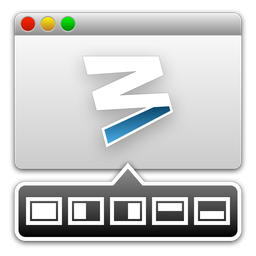

Welcome to Moom
Moom allows you to quickly move and zoom (hence the name) your windows around the screen. Moom has three main methods of moving and zooming windows:
- Hover the mouse over any window's green resize button, and use a pop-up palette.
- Drag any window to a screen edge or corner.
- Use keyboard shortcuts or an onscreen bezel and the arrow keys.
You can also move windows across displays (if you have more than one), and memorize window layouts, which can then be quickly recalled via keyboard or mouse. These saved layouts can also be activated automatically when adding or removing a display. Finally, you can create custom controls to size and position windows exactly as you like, assign these custom controls global shortcuts, and even chain multiple controls together.
See Custom Controls for more information on creating custom controls, and on saving and restoring window layouts.Moom can be run as a traditional application, as a menu bar icon, or in a completely invisible "faceless" mode. For help on switching between these modes, read about General Settings in the Settings section of help.
Getting Started
To use Moom, you must first enable Apple's Accessibility feature, which is the tool Moom uses to do its magic. Please see the Usage chapter for information on how to enable this feature in various versions of OS X.
Once the Accessibility feature is enabled, using Moom is as easy as moving your mouse over the green resize button found in most applications' windows, dragging a window to the edge of a display, or pressing a defined hot key to activate keyboard mode. You can then move and resize windows using either onscreen icons (in mouse mode) or defined keystrokes (in keyboard mode). There's also a Custom Controls mode that allows you to define multiple move and/or resize actions, and assign them to specific keyboard shortcuts.
The following very short video demonstrates Moom's mouse mode—using Moom in this manner is as simple as moving your mouse over a green zoom button, then hovering for a tenth of a second. When you do, the Moom palette will appear; click the desired move and resize option, and you're done. Here's how it looks in action. [Note: Internet connection required to view.]
The above video shows only the most basic usage of Moom; our web site features a more detailed walkthrough that demonstrates all of Moom's features, including keyboard usage, multi-monitor support, and creating custom commands:
Describing how Moom works in text is actually more complicated than using Moom. Watch the short intro video above, or one of the linked longer versions on our web site, to see how easy it is to use Moom.
After watching the videos, you can read about using Moom in mouse and keyboard mode, its settings options, and how you can create an unlimited number of custom move and/or size controls.
More Help
In addition to this help file, you can get more assistance with Moom on our Moom support page. You can post bug reports, request new features, and ask for help with any issues you may be having.
Thanks for purchasing Moom—we welcome your ideas on how to make it even better. Please feel free to send us your thoughts by using the 'Suggest a feature' link in the sidebar of the Moom web page.